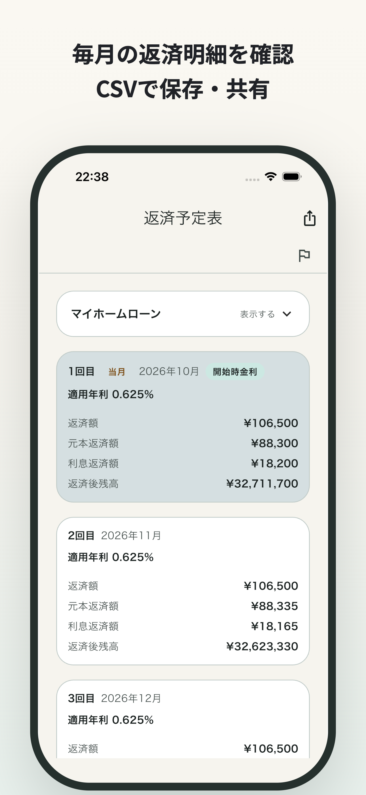

登録不要・無料のWebシミュレーター
ローンの「もしも」を、
いま試してみよう。
繰上げ返済、金利の上昇、これからの借入。
気になることを選んで、手元の数字でさっと比較。
条件を入力
現在の状況と契約期間から、繰上げ効果を比較。
試算結果
入力すると表示条件が変更されています。「試算結果を見る」で更新してください。
返済の選択肢を、数字で。
利息はどれくらい変わる？
完済まで、あと何年？
条件を入れると、ここで比較できます。
まずは「入力例を使う」でも試せます。
一度の試算から、これからの管理へ
試算の先を、
月ごとの返済明細まで。
アプリならローン情報を保存し、毎月の元金・利息・返済後残高まで詳しく確認できます。
アプリ内課金あり。一部機能にはプレミアム購入等の条件があります。
Webの入力内容はアプリへ自動で引き継がれません。

この試算でわかること・計算の前提
返済中のローン
返済開始月と当初の返済期間から、契約上の残り期間を月単位で計算します。現在の金利から残り期間を逆算しません。元利均等返済を前提としています。
繰上げ返済
指定した回数の通常返済の直後（「今すぐ」は次回返済の前）に元本を減らします。期間短縮型は返済額を原則維持し、「返済額も更新」が選ばれた場合は短縮後期間に合わせて再計算します。返済額軽減型は契約上の完済時期を維持します。
金利上昇
選んだシナリオの各時点で金利が段階的に上がると仮定します。5年ルールありの場合は、返済開始後に入力した基準月を5回経過するごとに、反映直前の残債・その時点の適用金利・残期間から返済額を再計算し、3か月後から反映します。現在金利の比較対象も同じ条件で再計算します。125%ルールありの場合は通常月の返済額に増額上限を適用します。
新規借入・共通の条件
新規借入は同じ借入額で金利・期間・返済方式の違いを比較し、各条件の金利は完済まで一定と仮定します。ボーナス返済では借入元本を通常返済分とボーナス返済分に分けて計算します。月利＝年利÷12、月ごとの利息・返済額は円未満切り捨て、最終回で残額を調整します。手数料・保証料・税金・住宅ローン控除・日割り計算は含みません。
5年ルール・125%ルールの有無や詳細、基準月から新返済額を反映するまでの時期は金融機関・商品により異なります。結果は比較のための概算です。返済予定表と契約条件を確認してご利用ください。